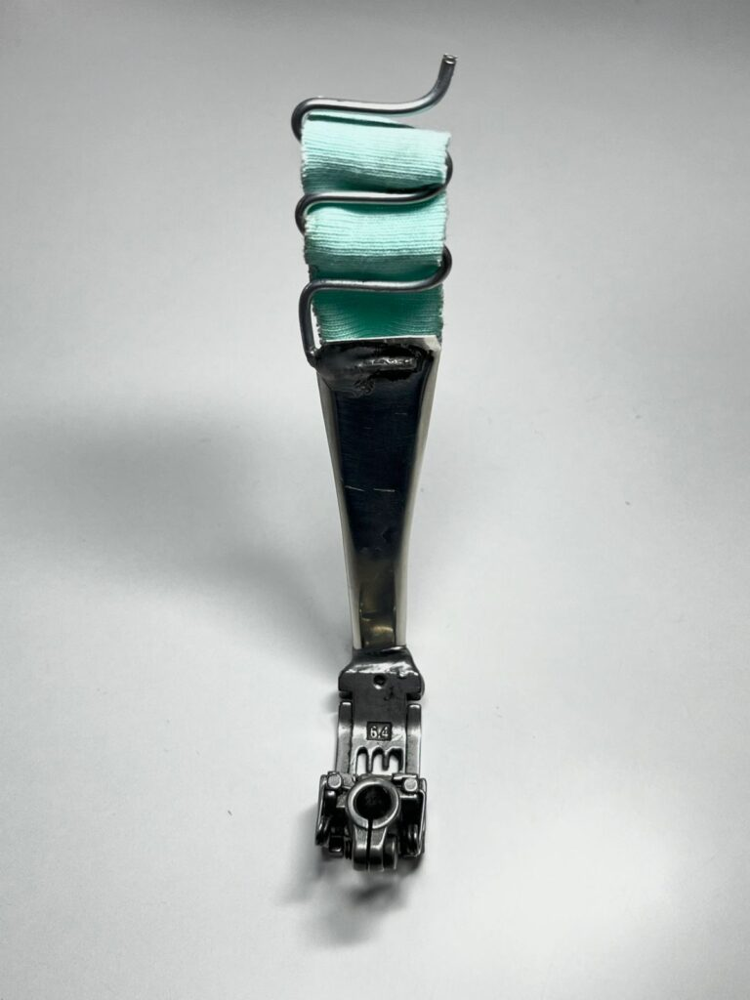
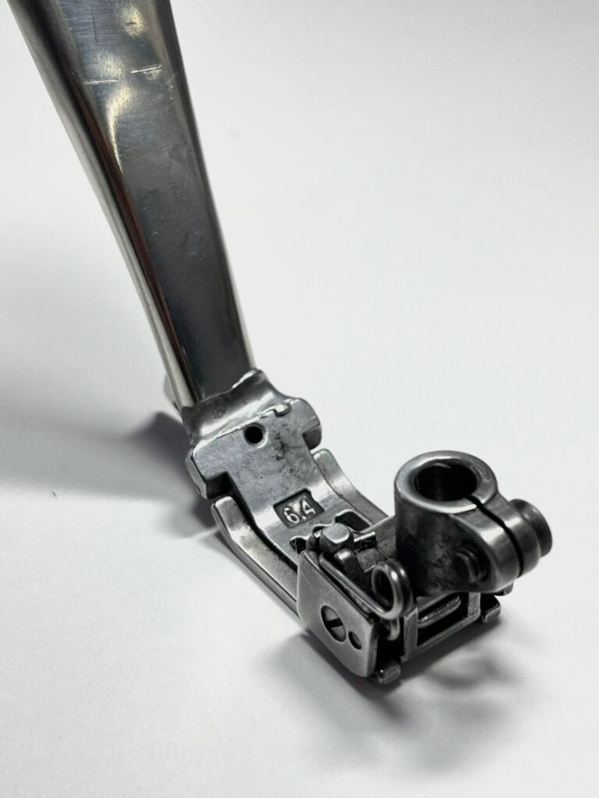

Prensatelas Caracol
Logra terminaciones profesionales y curvas perfectas en tus prendas.



$15.990 CLP
Comprar ahora
¿Por qué este prensatelas es diferente?
- ✔ Fabricado con material de alta calidad y resistencia
- ✔ No se rompe ni se deforma con el uso
- ✔ Ideal para acabados profesionales y duraderos
- ✔ Perfecto para quienes buscan lo mejor para su máquina
- ✔ Mejora notablemente la terminación de tus prendas